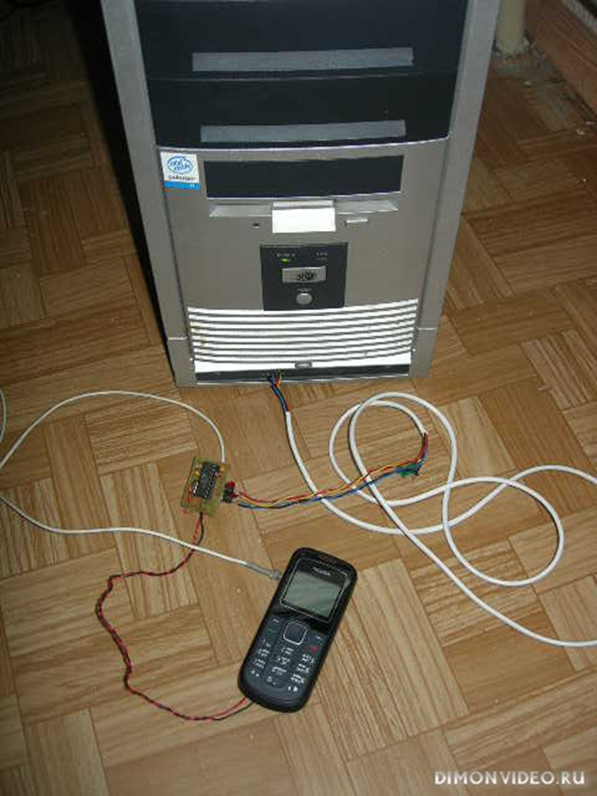
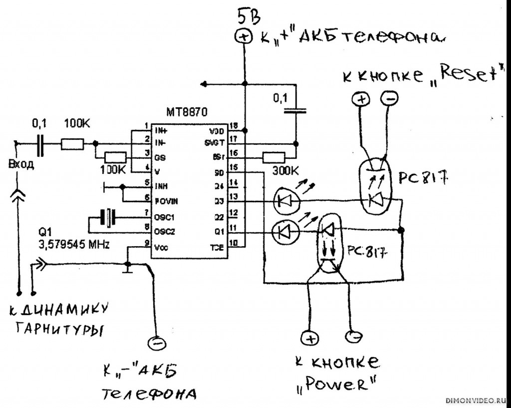
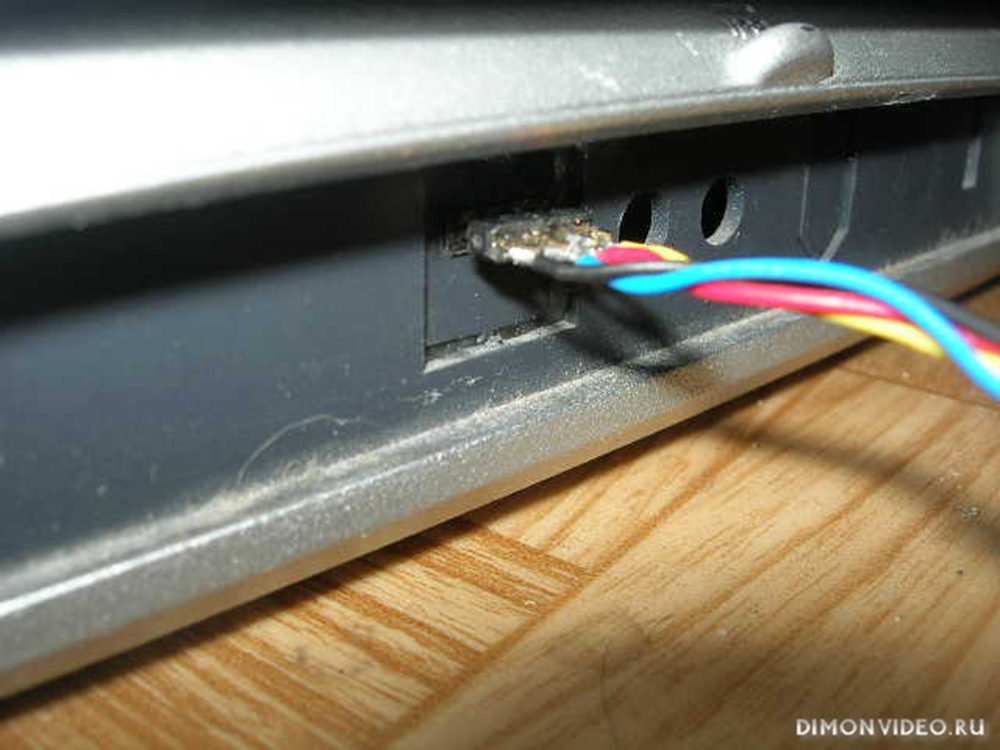
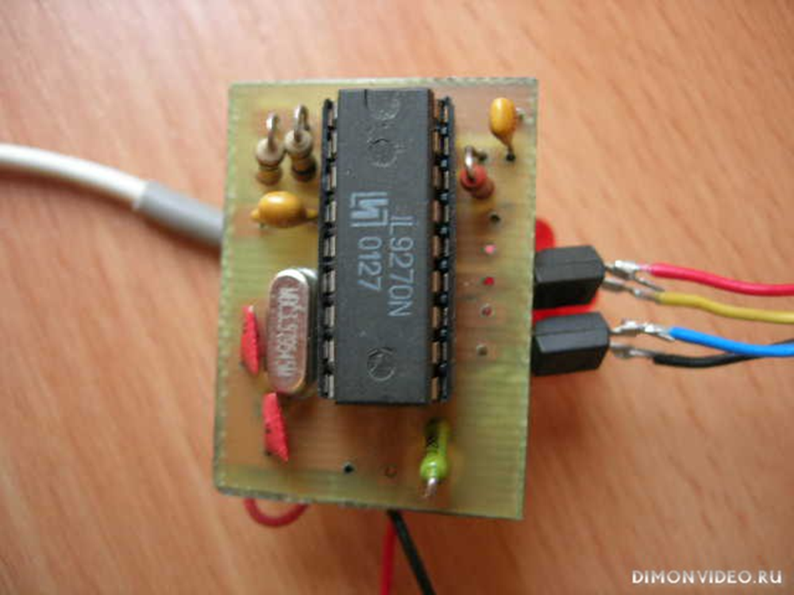
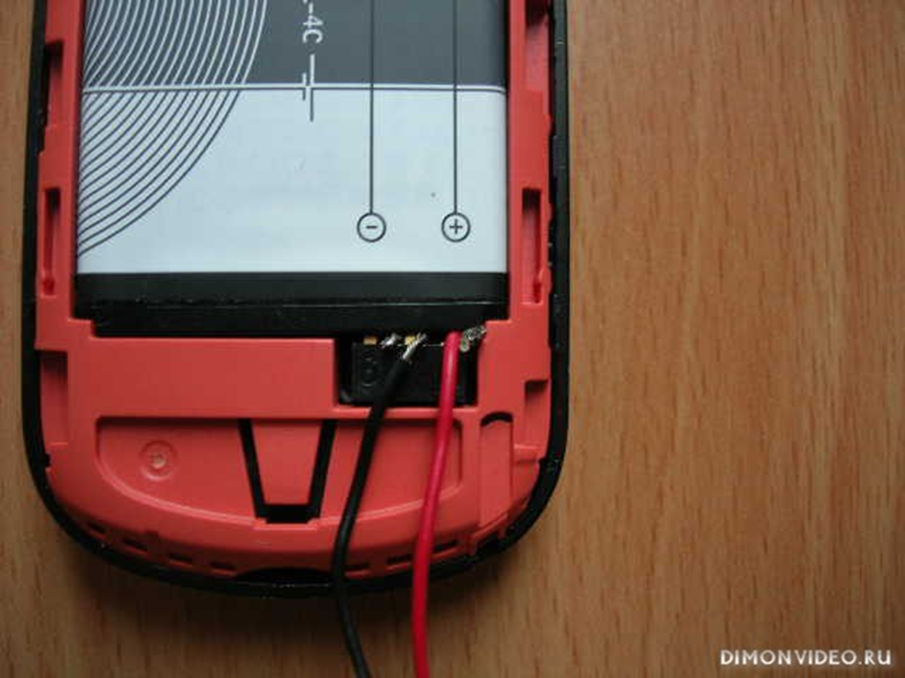

Хорошо что есть Интернет....Кто пользуется благами всемирной паутины знает что это такое.Для кого настали,для кого настают такие времена,что эта штуковина становится всё доступнее.Вообщем случилось так,что дома есть безлимитный Интернет и в кармане есть кпк с безлимитным интернетом.Последнее время и связь 3G заработала.И захотелось мне из спортивного интереса (ещё год назад осуществил) включить по сети ,удалённо,свой домашний компьютер со своего карманного друга.Для этого в БИОС я сделал настройки как полагается(всю инфу брал из Интернета),на кпк поставил программу которая отправляет "магический пакет" на заданный IP адрес для сетевой карты.Может я чего-то не так делал,может потому что IP адрес динамический на ББ ,но ни чего не вышло из этой затеи.Много эксперементировал,но увы.Комп не включался.А включить удалённо очень хотелось.Во-первых хотел просматривать квартиру через usb камеру,во-вторых хотелось транслировать для себя тв программы и смотреть на кпк(тогда ещё не было программы Crystal tv для wm5)
И тут мне пригодился мой опыт работы с паяльником...Есть в телефонии такое понятие как передача DTMF сигнала.Существует множество схем управления переферийными объектами.Но не буду вдаваться в теоретические подробности,просто опишу в чём весь смысл,да и потом правильно собранная схема будет работать не зависимо от того: знает человек как она работает или нет.

На компьютер необходимо установить программу DynDNS Updater ,которая всякий раз при подключении к Интернету, будет на свой сервер отправлять Ваш новый IP адрес. Ещё нужно установить программу z2Remote на ББ и на кпк,посредством которой и будет осуществляться управление.
Например, Вам необходимо включить дома (например,в Москве) компьютер,а вы находитесь (например, в Санкт-Петербурге).Для этого вы звоните на телефон подключенный к компьютеру,происходит "автоподъём" и нажимаете цифру "1" . Включается компьютер,автоматически подключается к интернету ,автоматически запускаются программы DynDNS Updater , z2Remote . Трубку после отправки команды отключаете.С Вашего счёта списывают сумму за 1 минуту,согласно тарифа,а вы можете удалённо управлять своим компьютером через GPRS
Конечно метод к которому я прибёг с точки зрения програмиста довольно варварский,ну не смог я включить по сети компьютер! Для тех кто хочет повторить подобный вариант включения ,опыт работы с паяльником и "травля платы" конечно необходимы.И ещё нужен сотовый телефон с гарнитурой.Можно конечно использовать и обыкновенный проводной телефон(с определённой доработкой) ,если имеется,но я использовал сотовый с симкой Билайн.Хотя разницы тоже ни какой,всмысле оператора.
Сотовый телефон можно использовать любой модели,лишь бы у него была возможность подключения гарнитуры.В настройках телефона необходимо активировать функцию автоприёма звонка.(Во всех сотовых телефонах,к которым можно подключить гарнитуру есть эта функция) Теперь необходимо собрать вот эту схему.

Со 100% уверенностью скажу,что при исправных деталях и правильном монтаже схема заработает сразу не требуя настройки. Я думаю у всех есть на передней панели компьютера две кнопки:одна-POWER,другая RESET. К ним нужно будет подобраться из нутри.К контактам на кнопках параллельно нужно подключить концы от оптопар.Кнопка POWER необходима,что бы включить компьютер,кнопка RESET необходима,на всякий случай.Вдруг пойдет что не так.Раз и перезагрузились....нажав цифру "2" На своём компьютере я вывел контакты от этих кнопок на переднюю панель и при помощи разъема подсоединяю схему управления когда необходимо.

Программы о которых я здесь упоминал DynDNS Updater и z2Remote имеются на сайте Dimonvideo.DynDNS Updater необходимо зарегистрировать на их сайте и получить свой адрес (типа user.dyndns.org) Причём легально и бесплатно.Этот адрес нужно будет вписать в настройках z2Remote Настройка этих программ не очень сложная.При установке они пропишутся в автозагрузку.Необходимо в автозагрузку и подключении к Интернету установить.... Ещё добавлю о схеме.

Сами детали совсем не дорогие ,ну не знаю ,на всё может рублей 200 потребуется по нынешним ценам.(Кстати,статичный IP адрес мой провайдер интернета предлагает за 150 р в месяц.)Если нет оптопар pc817 можно попробовать любые другие(АОТ 101 АО) или использовать реле с нормально разомкнутой парой контактов.Естественно для управления реле нужно использовать транзисторные ключи (подойдут КТ315Е,КТ3102Е) Напряжение управления реле 5 вольт.Напряжение которым будет управлять реле (контакты кнопок POWER и RESET) тоже 5 вольт.При подключении концов оптопар неоходимо соблюдать полярность,эмиттер к "-",коллектор к "+" на контактах кнопок.Если перепутаете ни чего страшного,просто не будет работать. Телефону и компьютеру от этого ничего не будет. А вот при использовании реле полярность значения не имеет.Светодиоды можно не использовать,они нужны просто для индикации получения сигнала.Когда нажимаете "1" загорается светодиод,и происходит замыкание контактов кнопки POWER.Когда нажимаете "2" загорается светодиод,и происходит замыкание контактов кнопки RESET.
Советую микросхему не припаивать,а устанавливать в припаянную панельку на плате,мало ли чего?Заменить всегда будет удобно.Тем более это,пожалуй,единственный активный элемент,могущий выйти из строя,или быть просто бракованным.Применённый в схеме кварц,довольно распостранённый,его можно "выдрать" из электронных китайских часов,если ни где уж не найти.Микросхему MT 8870 можно заменить на IL 9270 Эти микросхемы совсем не дефицитны,а "выдрать накрайняк" их можно из сломанного кнопочного проводного телефона Собранная схема DTMF управления питается от аккумулятора телефона,потребляя в дежурном режиме очень мало.Провода питания я просто подсунул на клеммы АКБ телефона,соблюдая полярность.

Два контакта от наушника подключаются ко входу микросхемы.Наушник не удаляйте,потому что некоторые телефоны "не видят" гарнитуры при отсутствии сопротивления на входе.При нажатии цифр в нём будут слышны звуки разной тональности.Это и есть сигналы DTMF.Через микрофон гарнитуры во время включения можно убедиться по звуку о включении компьютера.(Заработает кулер,завращается жёсткий диск,раздастся писк-это конечно всё индивидуально)
Если хотите на свободные выходы микросхемы (12,14) приделайте ещё реле или оптопары и управляйте ещё чем-нибудь через телефон,нажимая другие цифры.Свет в квартире, например, включайте:чтоб через usb камеру лучше виделось.
Для тех кто совсем не дружит с паяльником,могу предложить совсем варварский,но тем неменее действенный и безопасный способ удалённого включения компьютера.Всё так же потребуется сотовый телефон,но уже без гарнитуры.В телефоне необходимо сделать такую настройку на входящие звонки,что бы "вибрик" срабатывал один раз.Затем придется разобрать телефон,снять "вибрик" и параллельно ,на освоводившиеся клеммы припаять обмотку реле.А нормально разомкнутую пару контактов реле припаять параллельно паре контактов кнопки POWER.(можно использовать оптопару pc 817,конечно же соблюдая полярность) Включения компьютера произойдёт сразу в момент входящего звонка.(деннег не спишется со счёта,хоть из Америки звони) Естественно программы DynDNS Updater и z2Remote должны быть установлены и настроены.Всем хорош этот способ,особенно по времени реализации,но перезагрузить зависший компьютер уже не получится,да и позвонить случайно может кто-нибудь.Хотя может если поколдовать с настройками?
Ну желаю успеха.Если что не понятно спрашивайте,постараюсь объяснить.На первенство не претендую,т.к. наверняка кто-то что-то подобное делал.Но подобный тандем телефона и компьютера в купе с софтом описал и изготовил я сам.Чем и делюсь с вами,други.